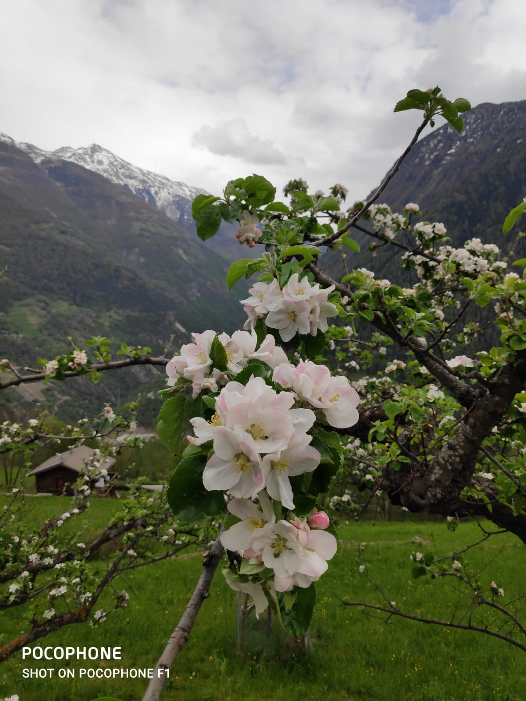
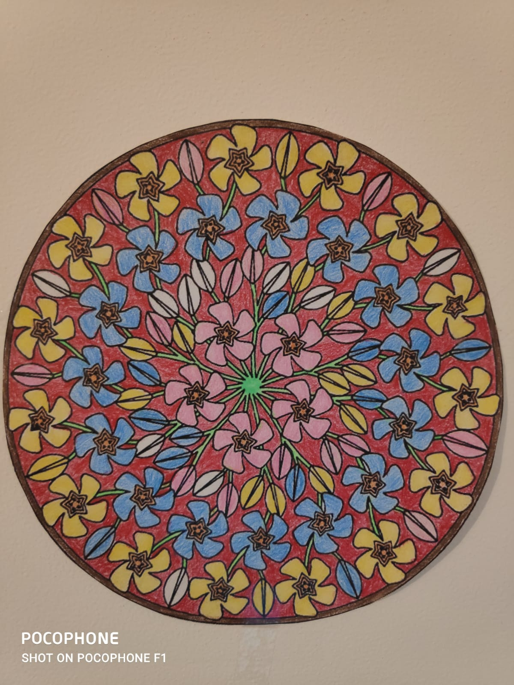
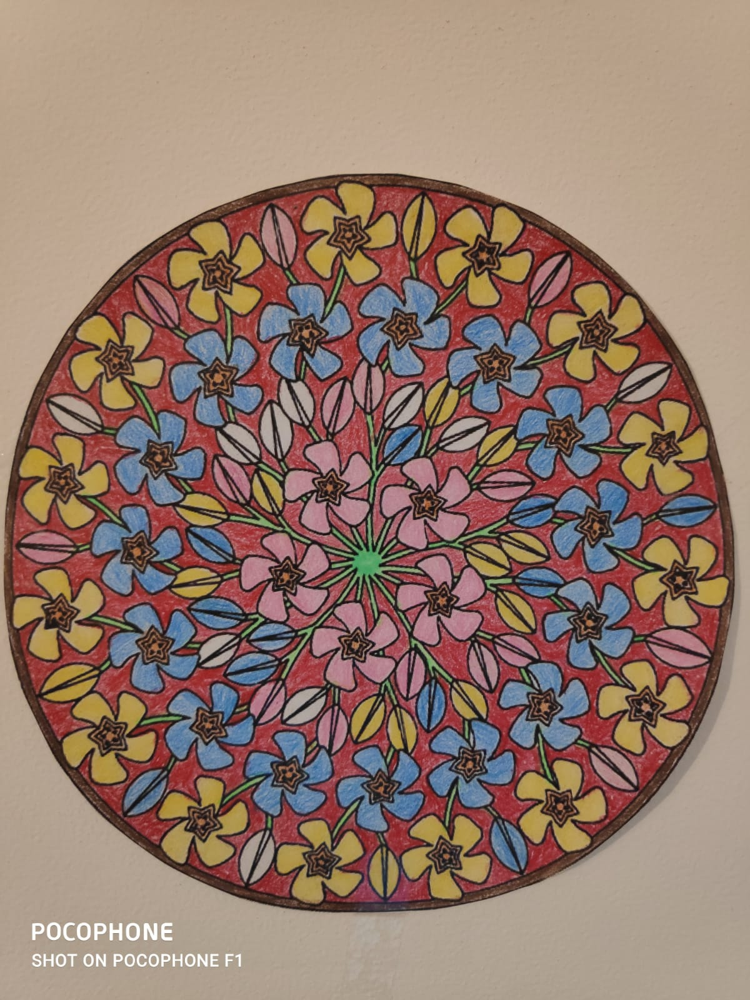

01/10/2005–30/07/2006 Master en anthropologie et études multiculturelles
EQF niveau 7
Faculté d'études européennes, Université "Babeș-Bolyai"Cluj- Napoca (Roumanie)
- spécialisation "Anthropologie et études multiculturelles";
01/10/1999–30/09/2004 Diplôme en philologie
EQF niveau 6
Faculté des lettres, Université «Babeș-Bolyai»Cluj- Napoca (Roumanie)
- spécialisation "Langue et littérature roumaine. Ethnologie";
15/09/1994–30/06/1999 Baccalauréat
EQF niveau 4
Collège pédagogique "Gheorghe Lazăr" Cluj- Napoca (Roumanie)
- spécialisation "Enseignant-éducateur"

| Langue | Niveau | |
|---|---|---|
| La langue Roumaine | C2 | |
| La langue Française | B2 | |
| La langue Anglaise | B2 | |
| La langue Italienne | A1 |

Période: 1999-présent
L'employeur: le Ministère de l'éducation et de la recherche
L'Inspectorat du comté de Cluj
L'Ecole Secondaire "Ion Creangă"
Locație: Cluj- Napoca, Cluj, Roumanie
Fonction didactique: Professeure pour le cycle primaire
Spécialisation: enseignement primaire
Description des tâches du travail:

juin 2020- le cours de formateur d'adultes:
iulie 2020- (en progrès) cours Software Testing:
Excellentes compétences organisationnelles et surveillance de grands groupes de personnes
Orientation vers la psychologie appliquée
Très bonnes compétences de formateur
Créativité
Sérieuse et persévérante
 © S.C.Continental Sibiu, Roumanie
© S.C.Continental Sibiu, Roumanie
Pendant un mois, J'ai travaillé au département des ressources humaines (RH), avec des tâches spécifiques de recrutement et de planification des entretiens.
Je collabore à la mise à jour permanente du site de l'établissement scolaire où je travaille: Collaborer




 
